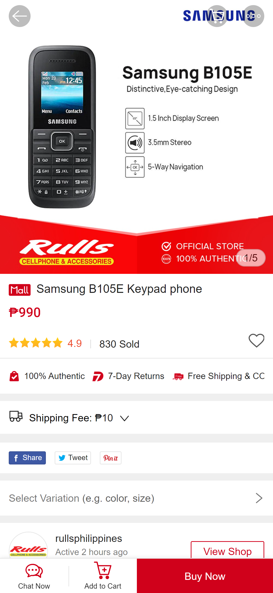
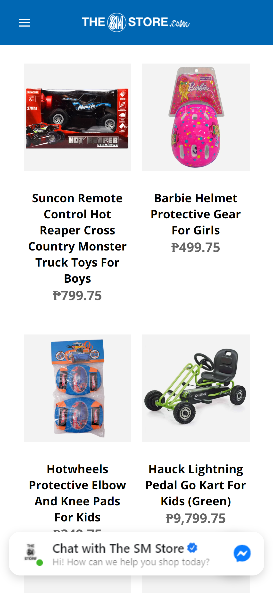
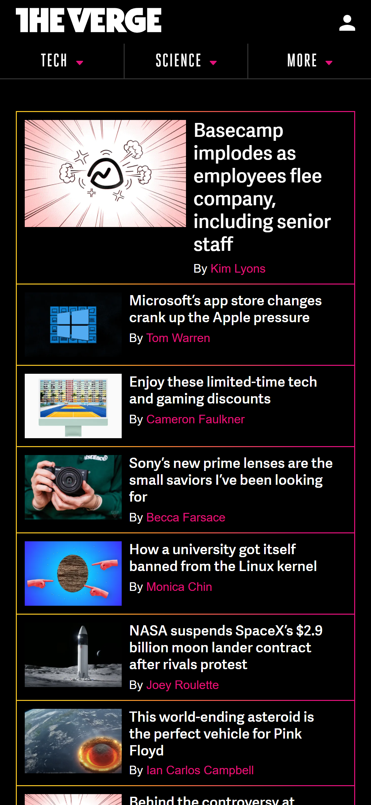

Visual Hierarchy
Shopee PH
shopee.ph The Shopee Ph I think display and follow a great Visual Hierarchy. First we can observe the big picture on the top that gives visual and info regarding the product they are selling. Second thing that will catch your eyes is the buy now button, it catches your eyes because of the color and also they want you to buy their product. Other information is the add to cart or chat now. I really think that they displayed a good visual hierarchy and their sales proves it.
Hick's Law
The SM Store
thesmstore.com The SM Store, demonstrate the Hick's Law. SM is one of the largest stores in the Philippines and of course they have many items let alone their online store. On the image are just few of the items or toys but the list is almost endless. If I am looking for a gift to someone it will take time for me to pick an item. But thankfully they have a category options to sort out what you are really looking for.
PARC: Repetition
The Verge
theverge.com The Verge is one of the leading site for tech and current things and provides many articles and good thing they use Principles of Repetition on their mobile site. After the first or newest article they repeated the same style all over again till the last article on the screen. And by doing this style it creates consistency easy to learn interface and accesability.